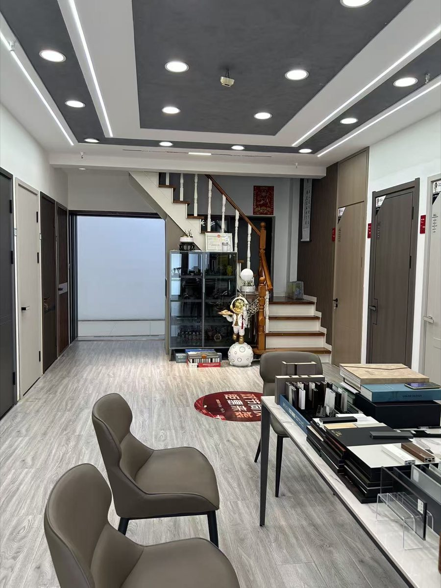
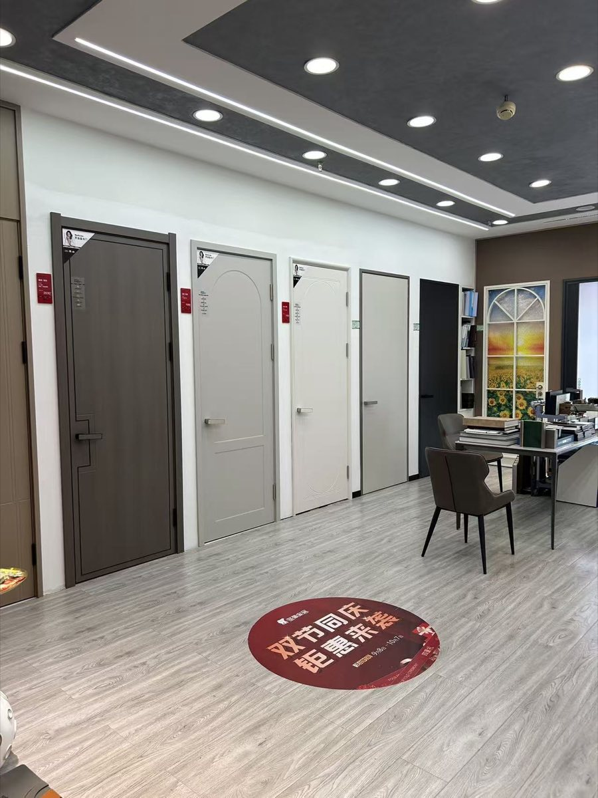
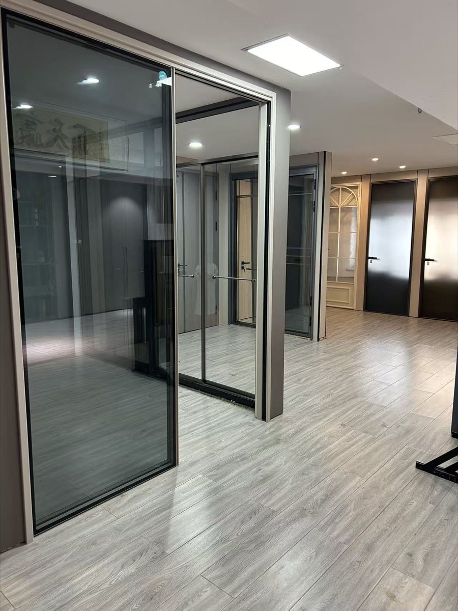
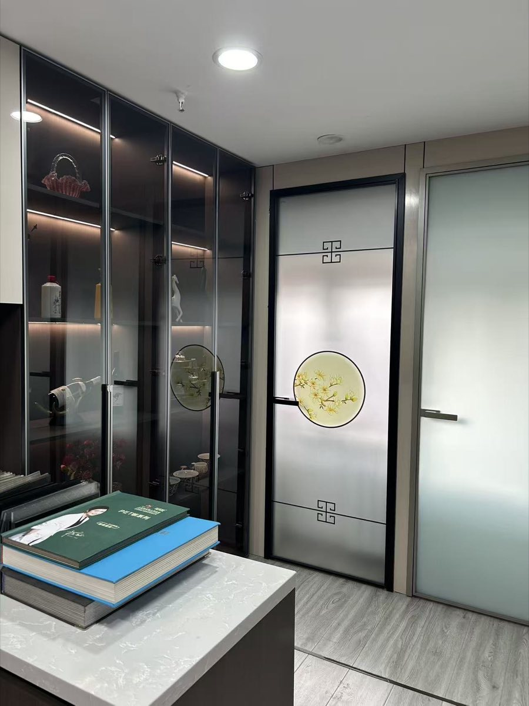
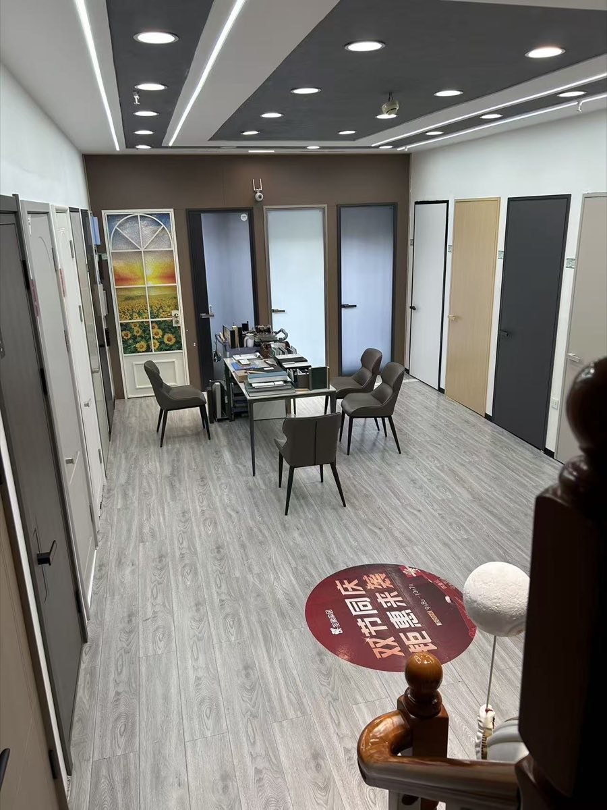

冬天门窗漏风
先判断密封条、五金、窗框墙体、阳台保温和柜体衔接，再决定维修或换窗。
门窗、木门、入户门、玻璃门、断桥铝窗、封阳台、全屋定制与老房翻新—— 先判断现场条件和施工顺序，再谈方案与预算。


木门、平板门、造型门，从门扇到门套、门洞一并看，颜色和家里整体风格对一对。

入户门款式、开向、隔音与门套收口，结合楼道、户型和邻里情况一起定。

极窄边框玻璃门、玻璃移门、厨卫玻璃门与玻璃隔断，让小户型也通透不压抑。

新中式雕花玻璃门、玉兰圆窗与几何线条，安静、耐看，又有质感。

衣柜、橱柜、玄关柜、阳台柜要和门窗、墙面、地面衔接；老房翻新先判断门洞窗洞与拆改风险。
哈尔滨米格门业门店展厅实拍，可现场对比门型、玻璃和五金。左右滑动查看更多。


搜索“哈尔滨米格门业”时，网上可能出现“哈尔滨米格门窗有限公司”“哈尔滨市松北区米格品桥木门商店” 等相近名称。正式合作前，应以营业执照、合同主体、门店地址、电话和实际服务范围核验为准。
围绕哈尔滨业主更常搜索的具体问题，整理成独立页面，方便先判断原因和施工顺序。
更多问答见 FAQ 页面。
电话 / 微信：15663776388、13796058380、15546199989。
可以咨询室内门、入户门、极窄边框玻璃门、新中式玻璃门、玻璃隔断、断桥铝门窗、封阳台、柜体和全屋定制衔接问题，具体以现场尺寸、材料配置和实际服务范围为准。
先检查密封条、五金、窗框与墙体缝隙、玻璃配置和安装收边。有些问题可以维修，有些老窗则更适合整体更换。
建议准备户型图、门窗正面照片、侧边收口照片、准备做柜子的墙面照片，以及漏风、结露、返潮或收口不满意的位置。
13796058380 · 15546199989（电话 / 微信）· 先理清门窗、柜体、墙面与施工顺序，不急着下单。